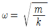
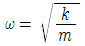
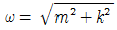
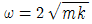
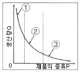
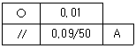
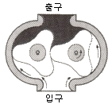

설비보전기사(구) (2016-10-01 기출문제)
1과목: 설비 진단 및 계측
1. 다음 각 고유진동수에 대한 진동차단기의 효과로 틀린 것은? (단, R=외부 진동주파수/시스템 고유주파수)
- R = 1.4 이하 : 진동차단효과 증폭
- R = 1.4 ~ 3 : 진동차단효과 높음
- R = 3 ~ 6 : 진동차단효과 낮음
- R = 6 ~ 10 : 진동차단효과 보통
(정답률: 77%)

2. 온도 측정에 사용되는 측온 저항체 중 백금의 특징이 아닌 것은?
- 산화가 쉽다.
- 사용범위가 넓다.
- 자계의 영향이 크다.
- 표준용으로 사용 가능하다.
(정답률: 78%)
3. 정밀 진단 기술에 해당하지 않는 것은?
- 고장 검출 해석 기술
- 스트레스 정량화 기술
- 결함 원인 및 개선 기술
- 강도 및 성능의 정량화 기술
(정답률: 49%)
4. 진동하는 동안 마찰이나 다른 저항으로 에너지가 손실되지 않는다면 그 진동을 무엇이라 하는가?
- 자유진동(free vibration)
- 강제진동(forced vibration)
- 감쇠진동(damped vibration)
- 비감쇠진동(undamped vibration)
(정답률: 85%)
5. 진동 측정 시 주의사항으로 틀린 것은?
- 항상 같은 회전수일 때 측정할 것
- 항상 윤활조건을 동일하게 유지할 것
- 항상 최신 센서의 측정기로 사용할 것
- 센서를 부착할 때 항상 동일 포인트에 부착할 것
(정답률: 89%)
6. 다음 중 진동측정기기의 측정값으로 널리 사용되는 것은?
- 실효값
- 편진폭
- 양진폭
- 산술 평균값
(정답률: 89%)
7. 다음 중 PD 미터(Positive displacement flowmeter)라고도 부르며 오벌 기어형과 루츠형이 대표적인 유량계는?
- 용적식 유량계
- 전자식 유량계
- 면적식 유량계
- 차압식 유량계
(정답률: 75%)
8. 다음 중 압력센서가 아닌 것은?
- 부르동관
- 벨로우즈
- 도플러 레이더
- 반도체 압력 센서
(정답률: 78%)
9. 다음 중 각도 검출용 센서가 아닌 것은?
- 리졸버
- 포지셔너
- 포텐쇼미터
- 로터리 인코너
(정답률: 55%)
10. 질량을 m[kg] 강성을 k[N/m]라 할 때 고유진동수 ω[rad/sec]를 나타내는 것은?




(정답률: 78%)
11. 다음 중 소음의 물리적 성질을 잘못 표현한 것은?
- 파면 : 파동의 높이가 같은 점들을 연결한 면
- 음선 : 음의 진행방향을 나타내는 선으로 파면에 수직
- 음파 : 공기 등의 매질을 전파하는 소밀파(압력파)
- 파동 : 음에너지의 전달이 매질의 변형운동으로 이루어지는 에너지 전달
(정답률: 68%)
12. 회전기계에서 주파수 영역에 따라 발생하는 이상 현상이 틀린 것은?
- 저주파 – 기초 볼트 풀림이나 베어링 마모로 인해서 발생되는 풀림
- 고주파 – 강제 급유되는 미끄럼 베어링을 갖는 회전자(rotor)에서 발생되는 오일 휨
- 고주파 – 유체기계에서 국부적 압력 저하에 의하여 기포가 발생하는 공동현상으로 인한 진동
- 저주파 – 회전자(rotor)의 축심 회전의 질량 분포가 부적정하여 발생하는 진동
(정답률: 71%)
13. 전자유량계에서 도전성 유체가 흐르는 측정관은 직각으로 지나는 자계를 주면, 각기 직교하는 방향으로 비례하는 기전력이 발생하는데, 이 때 기전력의 발생 방향은 어느 법칙에 따르는가?
- 렌츠의 법칙
- 패러데이의 법칙
- 플레밍의 왼손 법칙
- 플레밍의 오른속 법칙
(정답률: 77%)
14. 크고 작은 두 소리를 동시에 들을 때 큰 소리만 듣고 작은 소리는 듣지 못하는 현상을 무엇이라 하는가?
- 마스킹 효과
- 도플러 효과
- 거리감쇠 효과
- 음의 반사효과
(정답률: 85%)
15. 반사 소음기의 특징으로 적합하지 않은 것은?
- 팽창식 체임버(Chamber)를 흔히 사용한다.
- 넓은 주파수 폭 소음에 대하여 높은 효과를 갖는다.
- 덕트 소음 제어에 효과적으로 사용이 가능하다.
- 체임버(Chamber)에 의해서 입사소음 에너지를 반사하여 소멸시킨다.
(정답률: 53%)
16. 다음 조절계의 제어동작 중 비례동작에 있어 비례게인(Kc)과 비례대(PB)의 관계로 옳은 것은?
- Kc=PB
- Kc=1/4PB
- Kc=(1/PB)×100(%)
- Kc=(1/2)PB
(정답률: 67%)
17. 삼각대에 마이크로폰을 부착하고 소음계 본체와 분리해서 사용할 경우, 소음계 본체와 마이크로폰의 이격 거리로 가장 적당한 것은?
- 0.5m 이상
- 1.0m 이상
- 1.5m 이상
- 2.0m 이상
(정답률: 81%)
18. 설비진단 기술을 이용하여 수행할 수 있는 업무로 맞지 않는 것은?
- 예비품 발주 시기를 결정할 수 있다.
- 기계장치의 보수 및 교체시기를 결정할 수 있다.
- 계획정비 및 개량정비 방법을 결정할 수 있다.
- 열화의 정도나 고장의 종류를 파악하기 어렵다.
(정답률: 81%)
19. 진동 차단기로서 이용되는 패드의 재료가 아닌 것은?
- 강철
- 코르크
- 스폰지 고무
- 파이버 글라스
(정답률: 84%)
20. 다음 중 극히 작은 전류에 의해서 최대 눈금편위를 일으킬 수 있으므로, 전압계로 사용하는 계기는?
- 유도형
- 전류력계형
- 가동 코일형
- 가동 철편형
(정답률: 65%)
2과목: 설비관리
21. 설비를 목적에 따라 분류한다면, 생산, 유틸리티, 연구개발, 수송, 판매, 관리설비 등으로 구분할 수 있다. 이 때 관리설비에 해당되지 않는 것은?
- 사택이나 기숙사, 병원, 식당 등의 복리후생설비
- 보전시설, 보전창고, 방화설비 등의 공장보조설비
- 전용부두, 하역설비, 소화설비 등의 항만설비
- 냉난방설비, 전자계산기 등과 같은 공장의 관리설비
(정답률: 74%)
22. 다음 중 고장해석을 위해 제시되는 방법의 결과가 목적달성에 최적인 대안 선정이 가능한 방법은?
- 상황분석법
- 의사결정법
- 요인분석법
- 행동개발법
(정답률: 63%)
23. 공사의 완급순위(완급도)를 결정할 때, 고려할 사항이 아닌 것은?
- 공사가 지연되는 것에 따른 생산변경비용
- 공사가 급속해짐에 따라 다른 공사가 지연됨으로써 발생하는 손실
- 공사를 급하게 함으로 생기는 계획변경비용
- 공사를 급하게 함으로 생기는 일정 지연 손실
(정답률: 61%)
24. 설비 배치 형태 중 제품의 종류가 많고 수량이 적으며, 주문 생산과 표준화가 곤란한 다품종 소량 생산일 경우에 알맞은 배치 형식은 무엇인가?
- 기능별 배치
- 제품별 배치
- 혼합형 배치
- 제품 고정형 배치
(정답률: 79%)
25. 자주보전 전개스텝 7단계 중 제 3단계에 속하는 것은?
- 초기 청소
- 자주 점검
- 발생원 곤란개소 대책
- 점검·급유기준 작성
(정답률: 65%)
26. 다음 그림에서 ‘제품의 종류 P ＞생산량 Q’ 일 때 해당하는 구역과 설비배치는?

- ②구역 : 공정별 배치
- ③구역 : GT설비 배치
- ①구역 : 제품별 배치
- ③구역 : 기능별 배치
(정답률: 75%)
27. 보전 빈도 예측에 영향을 끼치는 요인이 아닌 것은?
- 설비의 고유 설계 신뢰도
- 보전 종류별 설비정지 횟수
- 보전에 필요한 인력 및 기술 수준
- 관리 조직의 자신감
(정답률: 82%)
28. 원자재의 양, 질, 비용, 납기 등의 확보가 곤란할 경우 원자재를 자사생산(自社生産)으로 바꾸어 기업방위를 도모하는 투자는?
- 후생 투자
- 합리적 투자
- 공격적 투자
- 방위적 투자
(정답률: 81%)
29. 설비 유효 가동률을 올바르게 표시한 것은?
- 설비 유효 가동률 = 설비 가동률 × 속도 가동률
- 설비 유효 가동률 = 설비 가동률 / 설비 고장률
- 설비 유효 가동률 = 시간 가동률 × 설비 가동률
- 설비 유효 가동률 = 시간 가동률 × 속도 가동률
(정답률: 46%)
30. 만성로스의 발생형태를 설명한 것으로 틀린 것은?
- 만성적으로 발생
- 일정 산포를 형성
- 불규칙적으로 발생
- 짧은 시간으로 되풀이 발생
(정답률: 60%)
31. 만성로스를 개선하기 위해 PM분석으로 8단계를 추진할 경우에 5단계에 해당되는 것은?
- 조사결과 판정
- 4M과의 관련성 검토
- 조사방법의 검토
- 현상이 성립하는 조건 정리
(정답률: 60%)
32. 수리공사의 목적 분류 중 설비검사에 의해서 계획하지 못했던 고장의 수리를 무엇이라 하는가?
- 사후수리공사
- 예방수리공사
- 보전개량공사
- 돌발수리공사
(정답률: 79%)
33. TPM 활동에서 실천주의 개념 중 3현주의에 속하지 않는 것은?
- 현장
- 현물
- 현실
- 현상
(정답률: 59%)
34. 다음 중 일시 정체로스에 대한 대책이 아닌 것은?
- 요인계통을 재검토할 것
- 현상을 잘 볼 것
- 미세한 결함을 시정할 것
- 최적조건을 파악할 것
(정답률: 46%)
35. 설비보전표준의 분류 중 틀린 것은?
- 설비검사 표준
- 정비 표준
- 수리 표준
- 설비 프로세스 분석 표준
(정답률: 75%)
36. 기업의 생산성을 높이는 보전방식을 수단별로 분류 시 해당되지 않는 것은?
- 예방보전
- 개량보전
- 보전예방
- 품질보전
(정답률: 72%)
37. 보전도 공학의 영역에서 설계기준개발, 보전개념개발, 보전기능개발, 보전도 할당 및 보전도 설계개선 등과 가장 관련성이 큰 것은?
- 보전도 계획
- 보전도 분석
- 보전도 설계
- 보전도 합리화
(정답률: 58%)
38. 간접비의 변화를 정확히 추척하기 위해 제품생산에 수행되는 활동들 또는 공정에 초점을 두고 원가를 추정하는 방법은?
- 기회원가
- 제조원가
- 총원가
- 활동기준원가
(정답률: 71%)
39. 최대부하와 설비용량과의 비를 말하며, 백분율로 표시되는 것은?
- 대비율(對比率)
- 수요율(需要率)
- 부등률(不等率)
- 설비이용률(設備利用率)
(정답률: 57%)
40. 이론사이클 시간과 실제사이클 시간과의 차이에서 발생하는 로스는?
- 고장 로스
- 속도저하 로스
- 계획정지 로스
- 조정 로스
(정답률: 84%)
3과목: 기계일반 및 기계보전
41. 구름 베어링에 예압을 주는 목적으로 가장 거리가 먼 것은?
- 베어링의 강성을 증가시킨다.
- 전동체 선회 미끄럼을 억제한다.
- 외부 진동에 의해 프레팅이 발생된다.
- 축의 흔들림에 의한 진동 및 이상음이 방지된다.
(정답률: 59%)
42. 담금질한 강 중의 잔류 오스테나이트를 마텐자이트화 시키는 작업으로 0℃이하의 온도에서 냉각시키는 조작은?
- 질량효과
- 심랭처리
- 항온열처리
- 고주파경화
(정답률: 83%)
43. 체결용 기계요소 중 고착된 볼트의 제거 방법으로 틀린 것은?
- 볼트에 충격을 주는 방법
- 너트에 충격을 주는 방법
- 로크 너트를 사용하는 방법
- 정으로 너트를 절단하는 방법
(정답률: 73%)
44. 도금 작업을 할 때 도금액에 관한 설명 중 옳은 것은?
- 도금액의 농도를 높이면 도금 속도가 늦어진다.
- 도금액 중에 금속분이 많으면 금속량 손실이 적어진다.
- 도금액의 농도를 높이면 도금 색깔이 균일해진다.
- 도금액의 농도를 높이면 도금액 조성의 변동이 커진다.
(정답률: 70%)
45. 기계의 축, 기어, 캠 등 부품에 강도 및 인성, 접촉부의 내마멸성을 증대시키기 위한 표면경화 열처리법이 아닌 것은?
- 침탄법
- 질화법
- 화염 경화법
- 항온 열처리법
(정답률: 53%)
46. 블록 브레이크의 제동력 기능저하 방지대책으로 틀린 것은?
- 작동용 유압시스템의 누설부를 점검한다.
- 브레이크 블록의 손상 및 탈락을 점검한다.
- 블레이크 블록과 드럼부에 이물질 유입이 없도록 덮개를 씌운다.
- 장기간 휴지 시 브레이크 드럼부에 녹방지를 위해 방청유를 도포한다.
(정답률: 74%)
47. 일반적인 용접에 대한 특징으로 틀린 것은?
- 저온 취성이 생길 우려가 있다.
- 재질의 변형 및 잔류 응력이 발생한다.
- 품질 검사가 곤란하고 변형과 수축이 생긴다.
- 용접사의 기량에 따라 용접부의 품질이 좌우된다.
(정답률: 70%)
48. 다음 중 응력집중에 의한 축의 파단원인으로 가장 거리가 먼 것은?
- 키 홈의 마모
- 축의 가공 불량
- 설계형상의 오류
- 커플링 중심내기 불량
(정답률: 73%)
49. 기계가공 또는 줄 작업 이후에 정밀 다듬질이 필요할 때 하는 작업은?
- 다이스(dies) 작업
- 드레싱(dressing) 작업
- 스크레이퍼(scraper) 작업
- 숏 피닝(shot-prrning) 작업
(정답률: 75%)
50. 일반적인 플라즈마 아크 용접의 특징으로 틀린 것은?
- 아크의 방향성과 집중성이 좋다.
- 설비비가 적게 들고, 무부하 전압이 낮다.
- 단층으로 용접할 수 있으므로 능률적이다.
- 용접부의 기계적 성질이 좋고 변형이 적다.
(정답률: 70%)
51. 다음 브레이크 재료 중 허용압력이 가장 큰 것은?
- 황동
- 주철
- 목재
- 파이버
(정답률: 78%)
52. V벨트에 대한 설명 중 틀린 것은?
- V벨트는 단면의 형상에 따라 6종류로 구분한다.
- 평 벨트보다 미끄럼이 적어 큰 회전력을 전달할 수 있다.
- V벨트는 V벨트 풀리의 바닥 홈에 접하고 있어야 한다.
- 풀리에 홈 각을 V벨트보다 더 작은 각도로 가공하여야만 미끄럼에 따른 동력 손실을 줄일 수 있다.
(정답률: 64%)
53. 다음 중 송풍기의 주요 구성품이 아닌 것은?
- 케이싱
- 피스톤
- 임펠러
- 축 베어링
(정답률: 79%)
54. 펌프에서 수격현상의 특징으로 틀린 것은?
- 밸브를 급격히 열거나 닫을 때 발생한다.
- 펌프의 동력이 급속히 차단될 때 나타난다.
- 펌프 내부에서 흡입 양정이 높거나 흐름 속도가 국부적으로 빨라져 기포가 발생하거나 유체가 증발한다.
- 관로에서 유속의 급격한 변화에 의한 압력이 상승 또는 하강하는 현상이다.
(정답률: 70%)
55. 기어손상의 분류에서 이 면의 열화에 대하여 소성항복에 속하는 것은?
- 피팅(Pitting)
- 피닝(Peening)
- 스폴링(Spalling)
- 스코어링(Scoring)
(정답률: 43%)
56. 설비를 가장 효율적으로 이용하기 위한 고장로스의 방지 대책으로 가장 거리가 먼 것은?
- 바른 사용조건을 준수한다.
- 강제열화를 방치하지 않는다.
- 보전요원의 보전품질을 높인다.
- 설계속도와 실제속도의 차이를 줄인다.
(정답률: 66%)
57. 배관의 부식을 방지하는 방법 중 가장 거리가 먼 것은?
- 온수의 온도를 50℃ 이상으로 한다.
- 가급적 동일계의 배관재를 선정한다.
- 배관 내 유속을 1.5m/s 이하로 제어한다.
- 배관 내 약제를 투입하여 용존산소를 제어한다.
(정답률: 79%)
58. 다음의 기하공차 도시법에 대한 설명 중 틀린 것은?

- A는 데이텀을 지시한다.
- 진원도 공차 값 0.01mm이다.
- 지정길이 50mm에 대하여 평행도 공차 값 0.09mm 이다.
- 지정길이 50mm에 대하여 원통도 공차 값 0.01mm 이다.
(정답률: 67%)
59. 보전 현장에서 회전체 축의 정렬 또는 공작물의 평행도 등을 측정하기 위하여 사용되는 측정기기는?
- 한계 게이지
- 마이크로미터
- 다이얼 게이지
- 버니어캘리퍼스
(정답률: 79%)
60. 압축기의 밸브 플레이트 교환요령에 관한 설명으로 옳은 것은?
- 교환시간이 되었으면 사용한계의 기준치 내에서도 교환한다.
- 마모한계에 도달하였어도 파손되지 않았으면 사용한다.
- 밸브 플레이트는 파손이 없으므로 계속 사용한다.
- 마모된 플레이트는 뒤집어서 1회에 한해 재사용한다.
(정답률: 82%)
4과목: 윤활관리
61. 왕복동 공기압축기는 윤활조건이 가장 가혹하다. 이러한 윤활조건을 만족시키기 위한 내부유가 갖추어야 할 성능으로 틀린 것은?
- 열·산화 안정성이 양호할 것
- 생성탄소가 경질이고 제거가 용이할 것
- 적정 점도를 가질 것
- 금속표면에 대한 부착성이 좋을 것
(정답률: 66%)
62. 베어링의 마찰면이 일정치 않은 상황에서 국부적인 고하중이 걸릴 때 작용하는 윤활유의 기능은?
- 밀봉 작용
- 세정 작용
- 응력 분산 작용
- 마찰 감소 작용
(정답률: 79%)
63. 다음 중 윤활제의 중화가를 측정하는 방법으로 맞는 것은?
- 전위차 측정법
- 콘라드손법
- 램스보텀법
- 형광분석법
(정답률: 58%)
64. 다음 중 플러싱(flushing) 시기로 적절하지 않은 것은?
- 윤활유 보충 시
- 기계장치의 신설 시
- 윤활계통의 검사 시
- 윤활장치의 분해보수 시
(정답률: 74%)
65. 극압 윤활에 대한 설명으로 틀린 것은?
- 충격하중이 있는 곳에 필요하다.
- 완전 윤활 또는 후막윤활이라고도 한다.
- 첨가제로 유황, 염소, 인 등이 사용된다.
- 고하중으로 금속의 접촉이 일어나는 곳에 필요하다.
(정답률: 60%)
66. 다음 그리스 시험 방법 중 기계적 안정성을 평가하는 시험은?
- 함유탄소
- 적점
- 혼화안정도
- 이유도
(정답률: 64%)
67. 다음 중 그리스 윤활의 특징으로 틀린 것은?
- 밀봉 효과가 크다.
- 내수성이 강하다.
- 장기간 보전이 가능하다.
- 이물질 혼합 시 제거가 용이하다.
(정답률: 75%)
68. 윤활제의 시험방법에는 윤활유(Oil)의 시험법과 그리스의 시험법이 있다. 다음 중에서 윤활유 일반성상 시험 대상이 아닌 것은?
- 비중
- 유동점
- 주도
- 동점도
(정답률: 60%)
69. 윤활관리의 원칙과 가장 거리가 먼 것은?
- 기계가 필요로 하는 적정 윤활제를 선정한다.
- 적합한 급유방법을 결정한다.
- 적정량을 결정한다.
- 적정한 장소에 공급하여 준다.
(정답률: 70%)
70. SAE엔진유 점도분류에서 동점도가 가장 높은 분류기호는?
- 10W
- 20W
- 20
- 50
(정답률: 72%)
71. 설비의 대형, 자동화로 분배밸브를 지관에 설치하고 임의의 양을 공급할 수 있는 급유방법으로 맞는 것은?
- 집중 그리스 윤활 장치
- 그리스 프레스 공급 장치
- 강제 순환 급유법
- 중력 순환 급유법
(정답률: 59%)
72. 그리스의 열화원인 중 화학적 요인인 산화와 가장 밀접한 관계가 있는 것은?
- 주도 감소
- 이물질 혼입
- 증주제의 증가
- 열과 공기 혼입
(정답률: 79%)
73. 다음 중 액상의 윤활류로서 갖추어야 할 성질이 아닌 것은?
- 가능한 한 화학적으로 활성이며, 청정 균질한 것
- 사용 상태에서 충분한 점도를 가질 것
- 한계 윤활상태에서 견디어 낼 수 있는 유성이 있을 것
- 산화나 열에 대한 안전성이 높을 것
(정답률: 77%)
74. 유압 작동유와 공급 시스템에 대한 설명으로 틀린 것은?
- 유압 시스템은 압력을 가진 매체로 에너지를 전달 수행하는 간단한 방법이다.
- 유압 작동유는 압축성 유체이어야 한다.
- 유압 펌프는 기계적 에너지를 유압에너지로 변환하는 장치이다.
- 공급 시스템에서 유체는 항상 청결해야 하며, 필터를 사용하여야 한다.
(정답률: 64%)
75. 다음 중 그리스 윤활의 특징으로 틀린 것은?
- 유동성이 나쁘기 때문에 누설이 적다.
- 초기 회전 시 회전저항이 크고 급유량 조절이 어렵다.
- 유막이 장기간 유지되므로 녹이나 부식이 방지된다.
- 흡착력이 약하고, 온도 상승 제어가 쉬워 초고속에 적합하다.
(정답률: 76%)
76. 윤활유 중에 연료유나 수분이 혼입되었을 때 일어나는 현상으로 윤활성능을 크게 저하시키는 것은?
- 열화
- 탄화
- 희석
- 산화
(정답률: 66%)
77. 윤활유로서 베어링을 윤활하고자 할 때 고려해야 할 일반적은 선정기준이 아닌 것은?
- 적정 점도
- 나프텐기유의 선택
- 급유 방법 및 주위 환경
- 운전 속도
(정답률: 71%)
78. 윤활유 오염방지를 위해 Oil Tank 설치 시 고려해야 할 사항이 아닌 것은?
- Tank 저부에 Magnetic Eilter 설치
- 적당한 Strainer 설치
- 적당한 Baffle Plate 설치
- Suction Pipe 맨 하부에 설치
(정답률: 72%)
79. 다음 중 윤활유의 점도 변화에 가장 큰 영향을 주는 인자는 어느 것인가?
- 습도
- 압력
- 비중
- 온도
(정답률: 79%)
80. 다음 중 가장 높은 온도조건(주위 환경온도)에서 사용하기에 가장 적합한 그리스는?
- 칼슘 그리스
- 나트륨 그리스
- 알루미늄 그리스
- 리튬 그리스
(정답률: 74%)
5과목: 공유압 및 자동화
81. 밸브의 종류와 사용목적의 연결이 틀린 것은?
- 감압밸브 : 2차 측의 압력을 일정하게 한다.
- 셔틀밸브 : 안전장치, 검사기능, 연동제어에 사용된다.
- 압력 스위치 : 공기 압력신호를 전기신호로 변환한다.
- 시퀀스 밸브 : 액추에이터의 동작을 정해진 순서에 따라 작동시킨다.
(정답률: 60%)
82. 공기압 요소의 표시방법 중 숫자를 이용한 방법에서 2.4라는 숫자의 의미로 옳은 것은? (단, 제어 대상은 실린더이다.)
- 2번 실린더의 전진 단에 설치된 요소
- 2번 실린더의 후진 단에 설치된 요소
- 2번 실린더의 전진 운동에 관계되는 요소
- 2번 실린더의 후진 운동에 관계되는 요소
(정답률: 70%)
83. 다음 그림과 같이 세 개의 회전자가 연속적으로 접촉하여 회전하며, 1회전당 토출량은 많으나 토출량의 변동이 큰 특징을 가진 펌프는?

- 로브 펌프
- 스크루 펌프
- 내접 기어 펌프
- 트로코이드 펌프
(정답률: 71%)
84. 압력제어 유압밸브가 아닌 것은?
- 체크 밸브
- 릴리프 밸브
- 언로딩 밸브
- 카운터 밸런스 밸브
(정답률: 67%)
85. 미리 정해진 순서에 따라 동일한 유압원을 이용하여 여러 가지 기계 조작을 순차적으로 수행하는 회로는?
- 증압 회로
- 시퀀스 회로
- 언로드 회로
- 카운터 밸런스 회로
(정답률: 82%)
86. 공기 압축기의 설치 조건으로 틀린 것은?
- 고온, 다습한 장소에 설치한다.
- 지반이 견고한 장소에 설치한다.
- 옥외 설치 시 직사광선을 피한다.
- 고장 수리가 가능하도록 충분한 설치 공간을 확보한다.
(정답률: 86%)
87. 로드 자체가 피스톤의 역할을 하며 로드가 굵기 때문에 부하에 의한 휨의 영향이 적은 실린더 타입은?
- 램형
- 사판형
- 양측 로드형
- 텔레스코프형
(정답률: 64%)
88. 케이싱으로부터 편심된 회전자에 날개가 끼워져 있는 구조이며 날개와 날개 사이에 발생하는 수압 면적 차에 의해 토크를 발생시키는 공압 모터는?
- 기어형
- 베인형
- 터빈형
- 피스톤형
(정답률: 54%)
89. 유압시스템에서 사용하는 비례제어 밸브를 기능에 따라 나눌 때 해당되지 않는 것은?
- 방향제어밸브
- 시간제어밸브
- 압력제어밸브
- 유량제어밸브
(정답률: 69%)
90. 다음 중 공·유압 회로도를 보고 알 수 없는 것은?
- 관로의 실제 길이
- 유체 흐름의 방향
- 유체 흐름의 순서
- 공·유압기기 종류
(정답률: 78%)
91. 단위 질량당 유체의 체적 또는 단위 중량당 유체의 체적은?
- 밀도
- 비중
- 비중량
- 비체적
(정답률: 70%)
92. 일반적으로 파이프 관로 내의 유체를 층류와 난류로 구별하게 하는 이론적 경계값은?
- 레이놀즈 수 Re=1220 정도
- 레이놀즈 수 Re=2320 정도
- 레이놀즈 수 Re=3320 정도
- 레이놀즈 수 Re=4220 정도
(정답률: 74%)
93. 시간과 관계없이 입력신호의 변화에 의해서만 제어가 행해지는 제어계는?
- 논리 제어계
- 동기 제어계
- 비동기 제어계
- 시퀀스 제어계
(정답률: 53%)
94. 공기 압축기 토출부 직후에 설치하여 공기를 강제적으로 냉각시켜 공압 관로 중의 수분을 분리·제거하는 기기는?
- 냉각기
- 드레인 분리기
- 메인 라인 필터
- 오일 미스트 세퍼레이터
(정답률: 76%)
95. 시스템 고장을 미연에 방지하는 것을 목적으로 하며 점검, 검사, 시험, 재조정 등을 정기적으로 행하는 보전 방식은?
- 개량 보전
- 보전 예방
- 사후 보전
- 예방 보전
(정답률: 75%)
96. 압력제어 밸브가 가지고 있는 특성이 아닌 것은?
- 유량 특성
- 폐입 특성
- 압력조절 특성
- 히스테리 특성
(정답률: 51%)
97. 유압 에너지를 저장하는데 사용되는 유압 장치는?
- 냉각기
- 여과기
- 증압기
- 축압기
(정답률: 79%)
98. 리드 스위치의 일반적인 특성이 아닌 것은?
- 소형, 경량이다.
- 스위칭 시간이 짧다.
- 반복 정밀도가 높다.
- 회로 구성이 복잡하다.
(정답률: 78%)
99. 단상, 삼상 전동기의 고장 중 기동 불능일 때, 다음 중 그 원인으로 가장 거리가 먼 것은?
- 퓨즈 단락
- 베어링 고착
- 전압의 부적당
- 내부 결손 오류
(정답률: 53%)
100. DC 솔레노이드를 사용할 때는 스파크가 발생하지 않도록 스파크 방지회로를 채택해 주어야 한다. 그 방법이 아닌 것은?
- 모터를 이용하는 방법
- 저항을 이용하는 방법
- 다이오드를 이용하는 방법
- 저항과 콘덴서를 이용하는 방법
(정답률: 67%)